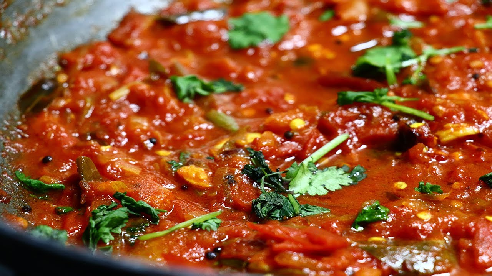

Tomato Curry

Description
This red hot tomato curry when combined with steamed rice or bread will surely make your tastebuds go wow.
Now without wasting any time, let's cook it
Ingredients
- Fresh tomatoes - 4
- Large Onion -1
- Green chillies - 3
- Musturad seeds
- Cumin seeds
- Ginger & garlic paste
Steps
- Take a pan, add oil to the pan and add mustard seeds and cumin seeds to the oil
- After a minute of frying the seeds, add chopped onions
- After onions are fried for a bit, add ginger & garlic paste
- After frying for 2-3 minutes, add green chillies and fry them for another 2-3 minutes
- Now add fresh chopped tomatoes to the pan, mix everything well and fry for 3 minutes
- Put a lid on the pan and for every 4-5 minutes, stir the contents well and replace the pan
- Once you see that the excess water is evoporated, add chilli powder, salt and corriender and mix well
- Tasty tomato curry is now ready. Enjoy it with rice or indian bread (Naan)